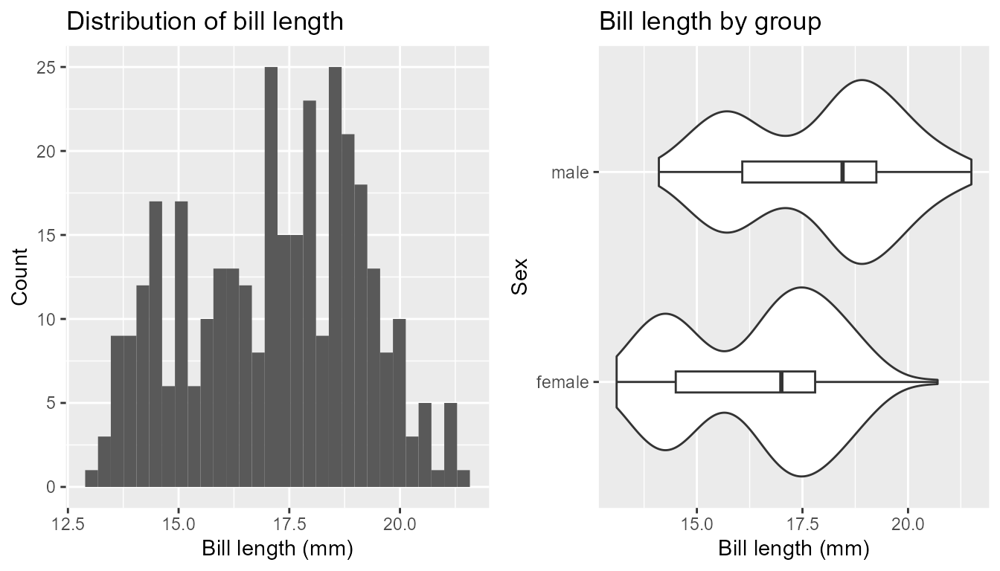
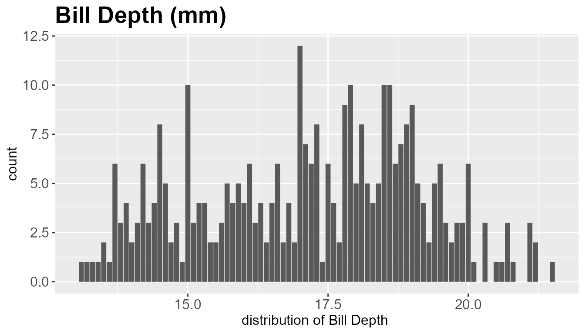
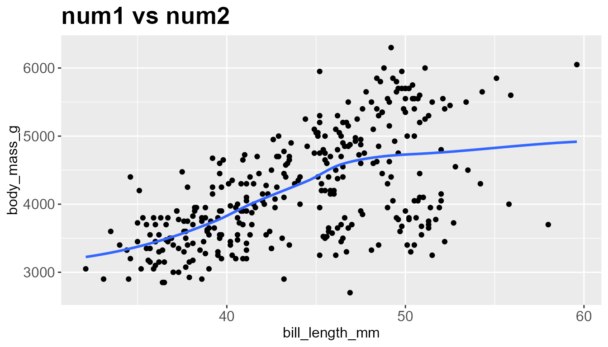
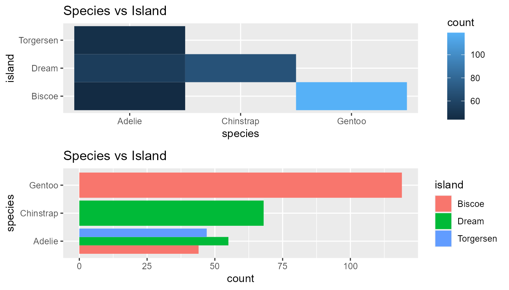

RPrelimEdaHelper-vignette
RPrelimEdaHelper-vignette.RmdSetting up the library
library(RPrelimEdaHelper)Lets look at some examples using PalmerPenguins Package
library (palmerpenguins)
penguins<- tidyr::drop_na(penguins)
head(penguins)
#> # A tibble: 6 × 8
#> species island bill_length_mm bill_depth_mm flipper_l…¹ body_…² sex year
#> <fct> <fct> <dbl> <dbl> <int> <int> <fct> <int>
#> 1 Adelie Torgersen 39.1 18.7 181 3750 male 2007
#> 2 Adelie Torgersen 39.5 17.4 186 3800 fema… 2007
#> 3 Adelie Torgersen 40.3 18 195 3250 fema… 2007
#> 4 Adelie Torgersen 36.7 19.3 193 3450 fema… 2007
#> 5 Adelie Torgersen 39.3 20.6 190 3650 male 2007
#> 6 Adelie Torgersen 38.9 17.8 181 3625 fema… 2007
#> # … with abbreviated variable names ¹flipper_length_mm, ²body_mass_gHere are some examples of how the functions work
num_dist_by_cat(
num = bill_depth_mm, group = sex, data = penguins,
title_hist = 'Distribution of bill length', title_boxplot = 'Bill length by group',
lab_num = 'Bill length (mm)', lab_group = 'Sex' , num_on_x = TRUE, stat = TRUE)
#> Test t p
#> 1 Equal var. assumed -7.306540 2.066410e-12
#> 2 Equal var. not asumed -7.308982 2.035676e-12
num_dist_summary(
col_name ="bill_depth_mm", data= tidyr::drop_na(penguins), title='Bill Depth (mm) ',label_x= 'distribution of Bill Depth ',
thresh_corr = 0.3,stat = TRUE
)
#> [1] "Summary statistics \n"
#> # A tibble: 1 × 5
#> column num_na mean median stdev
#> <chr> <int> <dbl> <dbl> <dbl>
#> 1 bill_depth_mm 0 17.2 17.2 1.97
#> [1] "Correlation Values \n"
#> # A tibble: 1 × 2
#> features correlation
#> <chr> <dbl>
#> 1 bill_depth_mm 1
num_dist_scatter(num1='bill_length_mm', num2='body_mass_g', data=penguins,
title = 'num1 vs num2', stat=TRUE, trend= 'loess')
#> # A tibble: 2 × 5
#> column num_na mean median stdev
#> <chr> <int> <dbl> <dbl> <dbl>
#> 1 bill_length_mm 0 44.0 44.0 5.47
#> 2 body_mass_g 0 4207. 4207. 805.
#>
#> iter imp variable
#> 1 1
#> Warning in cor.test.default(df1[[num1]], df1[[num2]], method = "spearman", :
#> Cannot compute exact p-value with ties
#> Warning in cor.test.default(df1[[num1]], df1[[num2]], method = "spearman", :
#> Cannot compute exact p-value with ties
#> # A tibble: 2 × 3
#> Method Correlation P_value
#> <chr> <dbl> <dbl>
#> 1 Pearson's 0.589 1.54e-32
#> 2 Spearman's 0.576 6.97e-31
#> `geom_smooth()` using formula = 'y ~ x'
cat_dist_heatmap(cat_1 = 'species', cat_2 = 'island', data = penguins, title = 'Species vs Island',
heatmap = TRUE, barchart = TRUE)
#> Warning: Use of `data[[cat_1]]` is discouraged.
#> ℹ Use `.data[[cat_1]]` instead.
#> Warning: Use of `data[[cat_2]]` is discouraged.
#> ℹ Use `.data[[cat_2]]` instead.
#> Warning: Use of `data[[cat_1]]` is discouraged.
#> ℹ Use `.data[[cat_1]]` instead.
#> Warning: Use of `data[[cat_2]]` is discouraged.
#> ℹ Use `.data[[cat_2]]` instead.